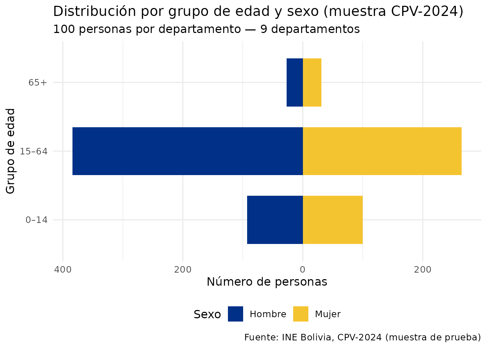
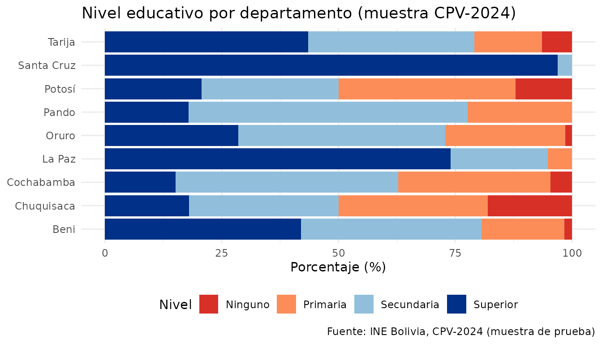

Análisis demográfico con censosbo
Source:vignettes/analisis-demografico.Rmd
analisis-demografico.RmdIntroducción
Esta vignette muestra cómo usar censosbo para análisis
demográficos con los datos del CPV-2024 de Bolivia.
Exploración rápida con datos de muestra
El paquete incluye sample_personas: 100 filas por cada
uno de los 9 departamentos (900 registros), disponibles sin descargar
nada. Úsalos para prototipar código antes de trabajar con los millones
de registros reales.
library(censosbo)
library(dplyr)
#>
#> Attaching package: 'dplyr'
#> The following objects are masked from 'package:stats':
#>
#> filter, lag
#> The following objects are masked from 'package:base':
#>
#> intersect, setdiff, setequal, union
library(ggplot2)
# Pirámide de edades por grupo y sexo (datos de muestra)
sample_personas |>
mutate(
grupo = factor(
case_when(g_edad == 1 ~ "0–14", g_edad == 2 ~ "15–64", g_edad == 3 ~ "65+"),
levels = c("0–14", "15–64", "65+")
),
sexo = ifelse(p25_sexo == 1, "Mujer", "Hombre")
) |>
filter(!is.na(grupo), !is.na(sexo)) |>
count(grupo, sexo) |>
mutate(n_pir = ifelse(sexo == "Hombre", -n, n)) |>
ggplot(aes(x = grupo, y = n_pir, fill = sexo)) +
geom_col(width = 0.7) +
coord_flip() +
scale_fill_manual(values = c("Hombre" = "#003087", "Mujer" = "#F4C430")) +
scale_y_continuous(labels = abs) +
labs(
title = "Distribución por grupo de edad y sexo (muestra CPV-2024)",
subtitle = "100 personas por departamento — 9 departamentos",
x = "Grupo de edad", y = "Número de personas", fill = "Sexo",
caption = "Fuente: INE Bolivia, CPV-2024 (muestra de prueba)"
) +
theme_minimal(base_size = 12) +
theme(legend.position = "bottom")
# Nivel educativo por departamento (datos de muestra)
sample_personas |>
mutate(
nivel = factor(
case_when(
nivel_edu == 1 ~ "Ninguno",
nivel_edu == 2 ~ "Primaria",
nivel_edu == 3 ~ "Secundaria",
nivel_edu == 4 ~ "Superior",
TRUE ~ NA_character_
),
levels = c("Ninguno", "Primaria", "Secundaria", "Superior")
),
dep = case_when(
idep == "01" ~ "Chuquisaca", idep == "02" ~ "La Paz",
idep == "03" ~ "Cochabamba", idep == "04" ~ "Oruro",
idep == "05" ~ "Potosí", idep == "06" ~ "Tarija",
idep == "07" ~ "Santa Cruz",idep == "08" ~ "Beni",
idep == "09" ~ "Pando"
)
) |>
filter(!is.na(nivel)) |>
count(dep, nivel) |>
group_by(dep) |>
mutate(pct = n / sum(n) * 100) |>
ggplot(aes(x = dep, y = pct, fill = nivel)) +
geom_col() +
scale_fill_manual(
values = c(Ninguno="#d73027", Primaria="#fc8d59",
Secundaria="#91bfdb", Superior="#003087")
) +
coord_flip() +
labs(
title = "Nivel educativo por departamento (muestra CPV-2024)",
x = NULL, y = "Porcentaje (%)", fill = "Nivel",
caption = "Fuente: INE Bolivia, CPV-2024 (muestra de prueba)"
) +
theme_minimal(base_size = 11) +
theme(legend.position = "bottom")
Los siguientes ejemplos utilizan los datos completos y requieren descargar archivos Parquet (~50–160 MB por departamento). Ejecuta el código en tu sesión de R después de instalar el paquete.
Estructura de edades y pirámide poblacional
library(dplyr)
library(ggplot2)
# Descargar datos de persona con las variables necesarias
# Trabajamos con un departamento para empezar
personas <- get_personas(
departamento = "07", # Santa Cruz
variables = c("p25_sexo", "p26_edad", "g_edad")
) |>
collect()
# Crear grupos de edad quinquenales
piramide <- personas |>
filter(!is.na(p26_edad), !is.na(p25_sexo)) |>
mutate(
grupo_edad = cut(
p26_edad,
breaks = c(0, 4, 9, 14, 19, 24, 29, 34, 39, 44, 49,
54, 59, 64, 69, 74, 79, 200),
labels = c("0-4","5-9","10-14","15-19","20-24","25-29",
"30-34","35-39","40-44","45-49","50-54",
"55-59","60-64","65-69","70-74","75-79","80+"),
right = TRUE
),
sexo = ifelse(p25_sexo == 1, "Hombre", "Mujer")
) |>
count(grupo_edad, sexo) |>
mutate(n_pir = ifelse(sexo == "Hombre", -n, n))
ggplot(piramide, aes(x = grupo_edad, y = n_pir, fill = sexo)) +
geom_col() +
coord_flip() +
scale_fill_manual(values = c("Hombre" = "#003087", "Mujer" = "#F4C430")) +
scale_y_continuous(
labels = function(x) formatC(abs(x), format = "f", digits = 0, big.mark = ".")
) +
labs(
title = "Pirámide poblacional - Santa Cruz, CPV-2024",
subtitle = "Distribución de la población por edad y sexo",
x = "Grupo de edad",
y = "Número de personas",
fill = "Sexo",
caption = "Fuente: INE Bolivia, Censo de Población y Vivienda 2024"
) +
theme_minimal(base_size = 12) +
theme(legend.position = "bottom")Auto-identificación con pueblos indígenas
indigenas <- get_personas(
departamento = "07",
variables = c("p25_sexo", "p26_edad", "p32_pueblo_per", "p32_pueblos")
) |>
filter(p32_pueblo_per == 1) |> # se auto-identifica con un pueblo
count(p32_pueblos, sort = TRUE) |>
collect() |>
slice_head(n = 15)
ggplot(indigenas, aes(x = reorder(p32_pueblos, n), y = n)) +
geom_col(fill = "#003087") +
coord_flip() +
scale_y_continuous(labels = scales::label_comma()) +
labs(
title = "Principales pueblos indígenas - Santa Cruz, CPV-2024",
x = NULL,
y = "Número de personas",
caption = "Fuente: INE Bolivia, CPV-2024"
) +
theme_minimal()Nivel educativo de la población adulta
educacion <- get_personas(
departamento = "07",
variables = c("p25_sexo", "p26_edad", "nivel_edu", "p40_lee")
) |>
filter(p26_edad >= 15) |> # población en edad de estudiar
collect()
# Nivel educativo por sexo
edu_sexo <- educacion |>
filter(!is.na(nivel_edu)) |>
mutate(sexo = ifelse(p25_sexo == 1, "Hombre", "Mujer")) |>
count(nivel_edu, sexo) |>
group_by(sexo) |>
mutate(pct = n / sum(n) * 100)
ggplot(edu_sexo, aes(x = factor(nivel_edu), y = pct, fill = sexo)) +
geom_col(position = "dodge") +
scale_fill_manual(values = c("Hombre" = "#003087", "Mujer" = "#F4C430")) +
labs(
title = "Nivel educativo por sexo (15+ años) - Santa Cruz",
x = "Nivel educativo (código)",
y = "Porcentaje (%)",
fill = "Sexo",
caption = "Fuente: INE Bolivia, CPV-2024"
) +
theme_minimal()Tasa de analfabetismo por municipio
library(dplyr)
analfabetismo <- get_personas(
departamento = "07",
variables = c("idep", "iprov", "imun", "p26_edad", "p40_lee")
) |>
filter(p26_edad >= 15) |>
group_by(imun) |>
summarise(
total = n(),
no_lee = sum(p40_lee == 2, na.rm = TRUE),
tasa_analf = no_lee / total * 100
) |>
collect() |>
arrange(desc(tasa_analf))
# Top 10 municipios con mayor analfabetismo
analfabetismo |>
slice_head(n = 10) |>
left_join(municipios(departamento = "07"), by = "imun") |>
ggplot(aes(x = reorder(nombre_mun, tasa_analf), y = tasa_analf)) +
geom_col(fill = "#003087") +
coord_flip() +
labs(
title = "Municipios con mayor analfabetismo - Santa Cruz",
subtitle = "Población de 15 años y más que no sabe leer ni escribir",
x = NULL,
y = "Tasa de analfabetismo (%)",
caption = "Fuente: INE Bolivia, CPV-2024"
) +
theme_minimal()Comparación nacional por departamento
# Descargar todos los departamentos (puede tomar varios minutos)
personas_nacional <- get_personas(
variables = c("idep", "p25_sexo", "p26_edad")
) |>
collect()
# Edad promedio por departamento
edad_dep <- personas_nacional |>
filter(!is.na(p26_edad)) |>
group_by(idep) |>
summarise(edad_promedio = mean(p26_edad)) |>
left_join(departamentos(), by = "idep") |>
arrange(edad_promedio)
ggplot(edad_dep, aes(x = reorder(nombre_dep, edad_promedio), y = edad_promedio)) +
geom_col(fill = "#003087") +
geom_text(aes(label = round(edad_promedio, 1)), hjust = -0.1, size = 3.5) +
coord_flip() +
ylim(0, 35) +
labs(
title = "Edad promedio por departamento - Bolivia, CPV-2024",
x = NULL,
y = "Edad promedio (años)",
caption = "Fuente: INE Bolivia, CPV-2024"
) +
theme_minimal()